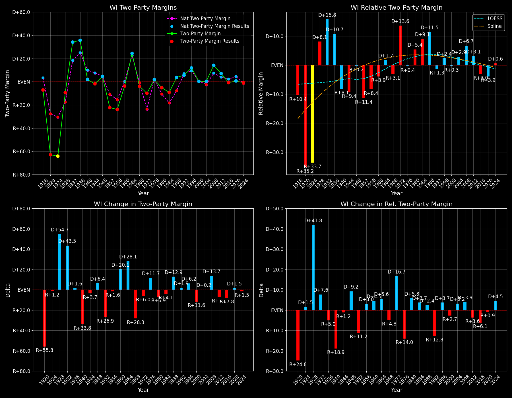

Wisconsin (WI) — Statewide

Margins · 3P share · Pres. deltas

Relative margins · Relative 3P · Rel. deltas
Wisconsin (WI) — Total Data
| Year | EVs | D | R | Margin | Rel. Margin | Nat. Margin | Margin Δ | Rel. Margin Δ | Nat. Margin Δ | Total votes |
|---|---|---|---|---|---|---|---|---|---|---|
| 1968 | 12 | 748,804(44.4%) | 809,997(48.0%) | R+3.6 | R+3.0 | R+0.6 | 1,686,636 | |||
| 1972 | 11 | 810,174(45.0%) | 989,430(55.0%) | R+10.0 | D+13.6 | R+23.5 | R+6.3 | D+16.6 | R+23.0 | 1,799,604 |
| 1976 | 11 | 1,040,232(50.9%) | 1,004,987(49.1%) | D+1.7 | R+0.5 | D+2.2 | D+11.7 | R+14.0 | D+25.7 | 2,045,219 |
| 1980 | 11 | 979,584(44.0%) | 1,087,045(48.8%) | R+4.8 | D+5.1 | R+9.9 | R+6.5 | D+5.5 | R+12.1 | 2,227,286 |
| 1984 | 11 | 995,739(45.4%) | 1,198,585(54.6%) | R+9.2 | D+8.9 | R+18.1 | R+4.4 | D+3.8 | R+8.2 | 2,194,324 |
| 1988 | 11 | 1,126,794(51.8%) | 1,047,499(48.2%) | D+3.6 | D+11.4 | R+7.7 | D+12.9 | D+2.5 | D+10.4 | 2,174,293 |
| 1992 | 11 | 1,041,066(41.4%) | 930,855(37.0%) | D+4.4 | R+1.2 | D+5.6 | D+0.7 | R+12.6 | D+13.3 | 2,516,400 |
| 1996 | 11 | 1,071,970(48.8%) | 845,028(38.5%) | D+10.3 | D+1.8 | D+8.6 | D+6.0 | D+3.0 | D+3.0 | 2,196,189 |
| 2000 | 11 | 1,242,984(47.9%) | 1,237,276(47.7%) | D+0.2 | R+0.3 | D+0.5 | R+10.1 | R+2.1 | R+8.0 | 2,595,303 |
| 2004 | 10 | 1,489,504(49.7%) | 1,478,120(49.3%) | D+0.4 | D+2.8 | R+2.5 | D+0.2 | D+3.1 | R+3.0 | 2,997,007 |
| 2008 | 10 | 1,677,211(56.3%) | 1,262,393(42.4%) | D+13.9 | D+6.7 | D+7.3 | D+13.6 | D+3.8 | D+9.7 | 2,976,896 |
| 2012 | 10 | 1,620,985(52.9%) | 1,407,966(46.0%) | D+7.0 | D+3.1 | D+3.9 | R+7.0 | R+3.6 | R+3.4 | 3,063,064 |
| 2016 | 10 | 1,382,536(46.5%) | 1,405,284(47.2%) | R+0.8 | R+2.9 | D+2.1 | R+7.7 | R+6.0 | R+1.8 | 2,976,150 |
| 2020 | 10 | 1,630,609(49.5%) | 1,610,059(48.8%) | D+0.6 | R+3.8 | D+4.4 | D+1.4 | R+1.0 | D+2.3 | 3,297,289 |
| 2024 | 10 | 1,668,229(48.7%) | 1,697,626(49.6%) | R+0.9 | D+0.7 | R+1.5 | R+1.5 | D+4.5 | R+6.0 | 3,422,918 |
Column explanations
- Year
- Election year.
- EVs
- Number of electoral votes allocated to this state or unit.
- D
- Number of votes for the Democratic candidate (raw count(pct%)).
- R
- Number of votes for the Republican candidate (raw count(pct%)).
- Margin
- Margin between the two major-party candidates, including third-party votes ((D - R)/total).
- Rel. Margin
- The presidential margin relative to the national presidential margin (Margin - Nat. Margin).
- Nat. Margin
- The national presidential margin for that year, including third-party votes ((D_total - R_total)/total_votes).
- Δ
- Change (delta) in the value from the previous election year. Blank if no data for previous year.
- Total votes
- Total voter turnout or ballots cast (when provided).
Wisconsin (WI) — Third-Party Data
| Year | Other votes | 3P Share | 3P Nat. Share | 3P Rel. Share |
|---|---|---|---|---|
| 1968 | 127,835(7.6%) | T+7.6 | T+13.6 | T-6.0 |
| 1972 | 0(0.0%) | T+0.1 | T-0.1 | |
| 1976 | 0(0.0%) | T+0.3 | T-0.3 | |
| 1980 | 160,657(7.2%) | T+7.2 | T+7.0 | T+0.2 |
| 1984 | 0(0.0%) | T+0.1 | T-0.1 | |
| 1988 | 0(0.0%) | T+0.2 | T-0.2 | |
| 1992 | 544,479(21.6%) | T+21.6 | T+19.2 | T+2.4 |
| 1996 | 279,191(12.7%) | T+12.7 | T+9.7 | T+3.0 |
| 2000 | 115,043(4.4%) | T+4.4 | T+3.7 | T+0.8 |
| 2004 | 29,383(1.0%) | T+1.0 | T+0.8 | T+0.1 |
| 2008 | 37,292(1.3%) | T+1.3 | T+1.4 | T-0.1 |
| 2012 | 34,113(1.1%) | T+1.1 | T+1.6 | T-0.5 |
| 2016 | 188,330(6.3%) | T+6.3 | T+5.5 | T+0.8 |
| 2020 | 56,621(1.7%) | T+1.7 | T+1.8 | T-0.1 |
| 2024 | 57,063(1.7%) | T+1.7 | T+1.9 | T-0.2 |
Column explanations
- Year
- Election year.
- Other votes
- Number of votes for third-party (other) candidates (raw count(pct%)).
- 3P Share
- Share of the vote received by third-party (other) candidates.
- 3P Nat. Share
- The national third-party share for that year (3P votes / total votes).
- 3P Rel. Share
- Third-party share relative to the national third-party share (3P share - Nat. 3P share).

Two-party margins · relative · deltas
Wisconsin (WI) — Two-Party Data
| Year | 2-Party Margin | 2-Party Nat. Margin | 2-Party Rel. Margin | 2-Party Margin Δ | 2-Party Nat. Margin Δ | 2-Party Rel. Margin Δ |
|---|---|---|---|---|---|---|
| 1968 | R+3.9 | R+0.7 | R+3.3 | |||
| 1972 | R+10.0 | R+23.6 | D+13.6 | R+6.0 | R+22.9 | D+16.8 |
| 1976 | D+1.7 | D+2.2 | R+0.5 | D+11.7 | D+25.8 | R+14.1 |
| 1980 | R+5.2 | R+10.6 | D+5.4 | R+6.9 | R+12.8 | D+5.9 |
| 1984 | R+9.2 | R+18.1 | D+8.9 | R+4.0 | R+7.5 | D+3.4 |
| 1988 | D+3.6 | R+7.8 | D+11.4 | D+12.9 | D+10.4 | D+2.5 |
| 1992 | D+5.6 | D+6.9 | R+1.3 | D+1.9 | D+14.7 | R+12.7 |
| 1996 | D+11.8 | D+9.5 | D+2.4 | D+6.2 | D+2.6 | D+3.7 |
| 2000 | D+0.2 | D+0.5 | R+0.3 | R+11.6 | R+8.9 | R+2.7 |
| 2004 | D+0.4 | R+2.5 | D+2.9 | D+0.2 | R+3.0 | D+3.2 |
| 2008 | D+14.1 | D+7.4 | D+6.7 | D+13.7 | D+9.8 | D+3.9 |
| 2012 | D+7.0 | D+3.9 | D+3.1 | R+7.1 | R+3.4 | R+3.6 |
| 2016 | R+0.8 | D+2.2 | R+3.0 | R+7.8 | R+1.7 | R+6.1 |
| 2020 | D+0.6 | D+4.5 | R+3.9 | D+1.5 | D+2.3 | R+0.9 |
| 2024 | R+0.9 | R+1.6 | D+0.7 | R+1.5 | R+6.1 | D+4.6 |
Column explanations
- Year
- Election year.
- 2-Party Margin
- Margin between the two major-party candidates, ignoring third-party votes ((D - R)/(D + R)).
- 2-Party Nat. Margin
- The national presidential margin for that year, including third-party votes ((D_total - R_total)/total_votes).
- 2-Party Rel. Margin
- The presidential margin relative to the national presidential margin (Margin - Nat. Margin).
- Δ
- Change (delta) in the value from the previous election year. Blank if no data for previous year.